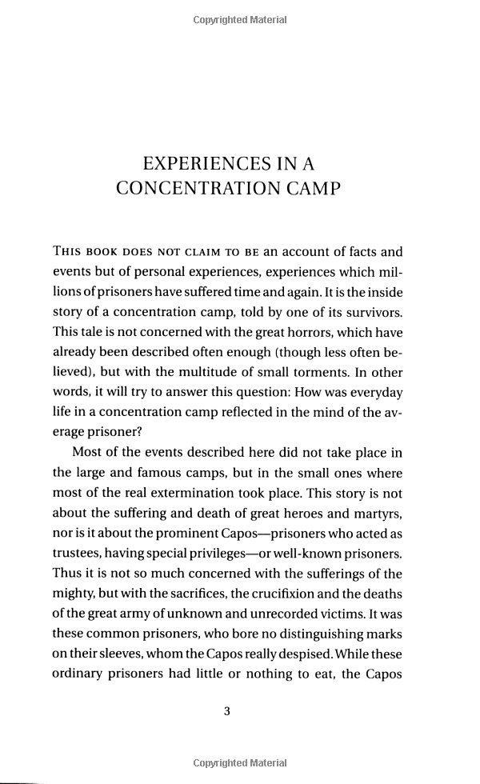

Man's Search for Meaning
Psychiatrist Viktor Frankl's memoir has riveted generations of readers with its descriptions of life
in Nazi death camps and its lessons for spiritual survival. Between 1942 and 1945 Frankl labored in
four different camps, including Auschwitz, while his parents, brother, and pregnant wife perished.
Based on his own experience and the experiences of others he treated later in his practice, Frankl
argues that we cannot avoid suffering but we can choose how to cope with it, find meaning in it, and
move forward with renewed purpose. Frankl's theory-known as logotherapy, from the Greek word logos
("meaning")-holds that our primary drive in life is not pleasure, as Freud maintained, but the
discovery and pursuit of what we personally find meaningful.
At the time of Frankl's death in 1997, Man's Search for Meaning had sold more than 10 million copies in twenty-four languages. A 1991 reader survey for the Library of Congress that asked readers to name a "book that made a difference in your life" found Man's Search for Meaning among the ten most influential books in America.
At the time of Frankl's death in 1997, Man's Search for Meaning had sold more than 10 million copies in twenty-four languages. A 1991 reader survey for the Library of Congress that asked readers to name a "book that made a difference in your life" found Man's Search for Meaning among the ten most influential books in America.